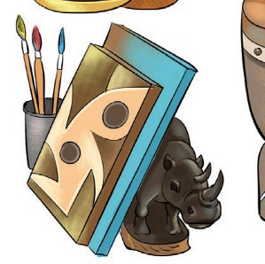
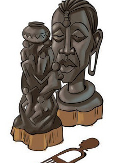
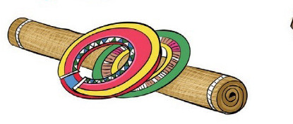
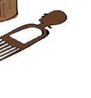
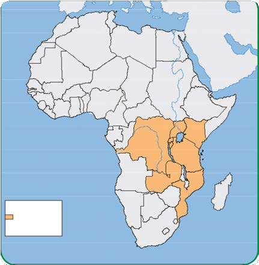
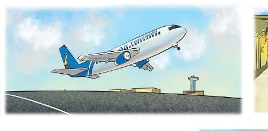
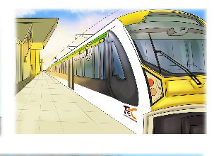
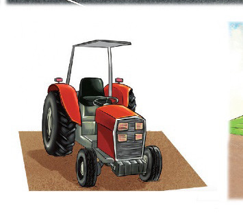
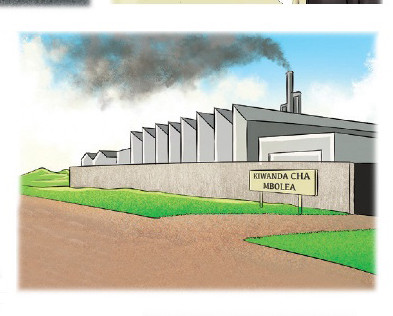
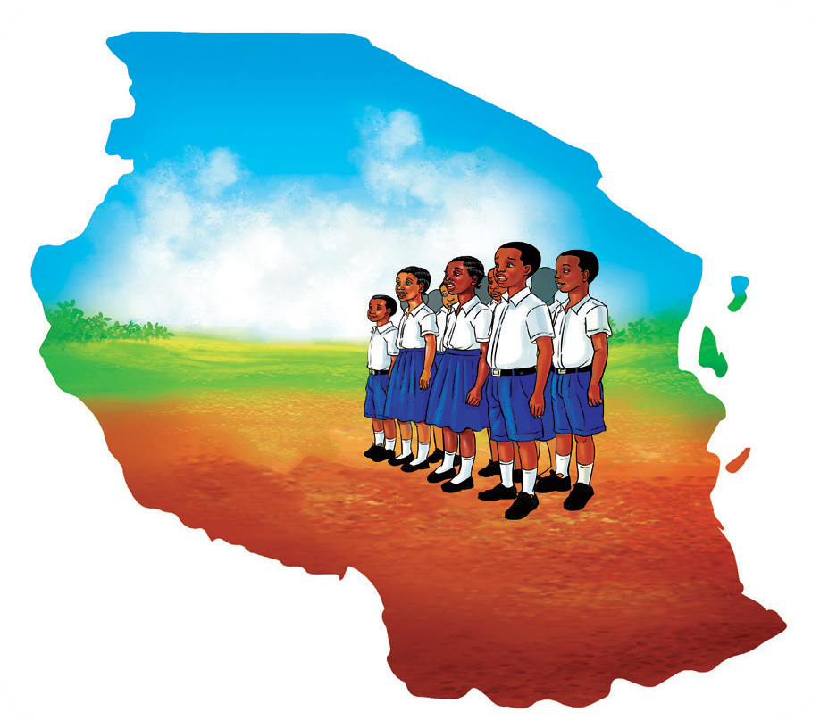

6. Utajiri ardhini, ni mwingi kupindukia,
Lo! Madini tumbitumbi, ardhini kuzamia,
Tanzanaiti dhahabu, almasi rubi pia,
Naisifu nchi yangu, nchi yangu Tanzania.
7. Nchi ya utamaduni, murua unaokua,
Wa sasa na wa zamani, haki unazingatia,
Wigo ni mpana sana, kwa aina za sanaa,
Naisifu nchi yangu, nchi yangu Tanzania.




FOR ONLINE USE ONLY
8.
Ni nchi ya Kiswahili, lugha yetu asilia,
Lugha yetu ya taifa, na pia ya Jumuia,
Na Umoja wa Afrika, lugha hii hutumia,
Naisifu nchi yangu, nchi yangu Tanzania.

KISWAHILI
9.
Ni nchi ilonuia, kupiga nyingi hatua,
Kukuza kilimo chetu, tuwe na hadhi murua,
Sayansi tukazanie, uchumi tutainua,
Naisifu nchi yangu, nchi yangu Tanzania.




KIWANDA CHA MBOLEA
10.
Wasifu wa nchi yangu, sasa ninamalizia,
Sifa hizi zimetosha, ni nyingi kwa wasojua,
Kesho nitaziongeza, kisha nitawaghania,
Naisifu nchi yangu, nchi yangu Tanzania.
